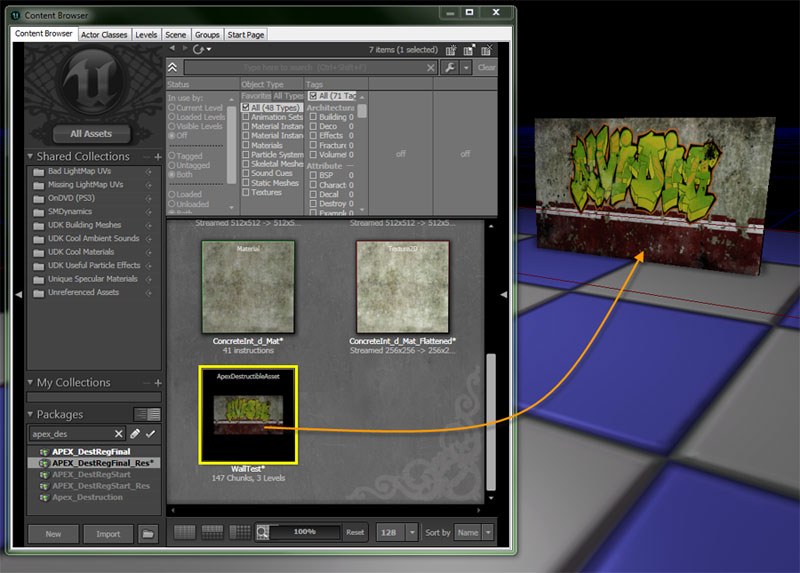

UDN
Search public documentation:
APEXDestruction
日本語訳
中国翻译
한국어
Interested in the Unreal Engine?
Visit the Unreal Technology site.
Looking for jobs and company info?
Check out the Epic games site.
Questions about support via UDN?
Contact the UDN Staff
中国翻译
한국어
Interested in the Unreal Engine?
Visit the Unreal Technology site.
Looking for jobs and company info?
Check out the Epic games site.
Questions about support via UDN?
Contact the UDN Staff
UE3 Home > APEX Framework > APEX Destruction in UE3
UE3 Home > Level Designer > APEX Destruction in UE3
UE3 Home > Level Designer > APEX Destruction in UE3
APEX Destruction in UE3
- APEX Destruction in UE3
- Overview
- Getting the Tools
- Tutorials
- Importing APEX Destruction into UE3
- Creating an APEX Destructible Actor in a Level
- Apex Destructible Asset Properties
- Dealing with Broken Chunks
- Enabling GPU Rigid Bodies
- Modifying Weapon Damage
- Kismet Scripting for Destruction
- Crumbling Destruction
- Tips for Destruction on Consoles
Overview
Getting the Tools
Tutorials
Importing APEX Destruction into UE3
- In the Material Editor create a material with the Used With APEXMeshes? flag set.
- Import the .apx file that you have created with PhysXLab.
- Open the properties for the Apex Destructible Asset and set the Materials to be the UE3 materials that you will be using for the destructible mesh. In this image you can see that the external material is assigned to slot 0 and the internal material is assigned to slot 1
Creating an APEX Destructible Actor in a Level
- Select the Apex Destructible Asset in the generic browser and right-click in the level editor at the place you want to place the actor.
- Scale the actor as needed for the level.

Apex Destructible Asset Properties
- Materials - Materials contains an array of Materials which can be remapped relative to this asset.
- FractureMaterials - Fracture effects for each fracture level
- DefaultPhysMaterial - Default physical material to use for this asset. If the actor has a physical material defined in its mesh component, that will be used instead.
- CrumbleEmitterName - The name of the NxMeshParticleSystem to use for crumbling. This overrides the crumble system defined in the NxDestructibleAsset if specified.
- DustEmitterName - The name of the NxMeshParticleSystem to use for fracture-line dust. This overrides the dust system defined in the NxDestructibleAsset if specified.
- DestructibleParameters - Parameters controlling the destruction properties. The Destructible Parameter contain detailed settings about how the destructible will behave when hit, how far the debris can get from the asset before being deleted, and how long the debris will stay before being deleted.
- DamageParameters - Parameters that pertain to chunk damage.
- DamageThreshold - The damage amount which will cause a chunk to fracture (break free) from the destructible. This is obtained from the damage value passed into the NxDestructibleActor::applyDamage, or NxDestructibleActor::applyRadiusDamage, or via impact (see 'forceToDamage').
- DamageSpread - Controls the distance into the destructible to propagate damage. The damage applied to the chunk is multiplied by DamageSpread, to get the propagation distance. All chunks within the radius will have damage applied to them. The damage applied to each chunk varies with distance to the damage application position. Full damage is taken at zero distance, and zero damage at the damage radius.
- ImpactDamage - If a chunk is at a depth which has NX_DESTRUCTIBLE_TAKE_IMPACT_DAMAGE set (see DepthParameters), then when a chunk has a collision in the NxScene, it will take damage equal to ImpactDamage mulitplied by the impact force. The default value is zero, which effectively disables impact damage.
- ImpactResistance - When a chunk takes impact damage due to physical contact (see DepthParameters), this parameter is the maximum impulse the contact can generate. Weak materials such as glass may have this set to a low value, so that heavier objects will pass through them during fracture. N.B.: Setting this parameter to 0 disables the impulse cap; that is, zero is interpreted as infinite. Default value = 0.0f.
Note: In the November 2012 QA UDK release setting this parameter to anything other than 0 will cause a deadlock within APEX. This will be fixed with the APEX 1.2.3 release. - DefaultImpactDamageDepth - By default, impact damage will only be taken to this depth. For a particular depth, this default may be overridden in the DepthParameters. If negative, impact damage is disabled.
- DebrisParameters - Parameters that pertain to chunk debris-level settings.
- DebrisLifetimeMin - "Debris chunks" (see debrisDepth) will be destroyed after a time (in seconds) separated from non-debris chunks. The actual lifetime is interpolated between these two values, based upon the module's LOD setting. To disable lifetime, clear the NX_DESTRUCTIBLE_DEBRIS_TIMEOUT flag in the flags field. If debrisLifetimeMax < debrisLifetimeMin, the mean of the two is used for both. Default debrisLifetimeMin = 1.0, debrisLifetimeMax = 10.0f.
- DebrisLifetimeMax - "
- DebrisMaxSeparationMin - "Debris chunks" (see debrisDepth) will be destroyed if they are separated from their origin by a distance greater than maxSeparation. The actual maxSeparation is interpolated between these two values, based upon the module's LOD setting. To disable maxSeparation, clear the NX_DESTRUCTIBLE_DEBRIS_MAX_SEPARATION flag in the flags field. If debrisMaxSeparationMax < debrisMaxSeparationMin, the mean of the two is used for both. Default debrisMaxSeparationMin = 1.0, debrisMaxSeparationMax = 10.0f.
- DebrisMaxSeparationMax - "
- ValidBounds - "Debris chunks" (see debrisDepth) will be destroyed if they are separated from their origin by a distance greater than maxSeparation multiplied by the original destructible asset size. The actual maxSeparation is interpolated between these two values, based upon the module's LOD setting. To disable maxSeparation, clear the NX_DESTRUCTIBLE_DEBRIS_MAX_SEPARATION flag in the flags field. If debrisMaxSeparationMax < debrisMaxSeparationMin, the mean of the two is used for both. Default debrisMaxSeparationMin = 1.0, debrisMaxSeparationMax = 10.0f.
- AdvancedParameters - Parameters that are less-often used. See NxDestructibleAdvancedParameters.
- DamageCap - Limits the amount of damage applied to a chunk. This is useful for preventing the entire destructible from getting pulverized by a very large application of damage. This can easily happen when impact damage is used, and the damage amount is proportional to the impact force (see forceToDamage).
- ImpactVelocityThreshold - Large impact force may be reported if rigid bodies are spawned inside one another. In this case the realative velocity of the two objects will be low. This variable allows the user to set a minimum velocity threshold for impacts to ensure that the objects are moving at a min velocity in order for the impact force to be considered.
- MaxChunkSpeed - If greater than 0, the chunks' speeds will not be allowed to exceed this value. Use 0 to disable this feature (this is the default).
- MassScaleExponent - See MassScale. Values less than 1 have the effect of reducing the ratio of different masses. The closer MassScaleExponent is to zero, the more the ratio will be "flattened." This helps PhysX converge when there is a very large number of interacting rigid bodies (such as a pile of destructible chunks). Valid range: [0,1]. Default = 0.5.
- MassScale - Dynamic chunk islands will have their masses divided by MassScale, raised to the power MassScaleExponent, then multiplied by MassScale. See MassScaleExponent. Valid range: (0,infinity). Default = 1.0.
- FractureImpulseScale - Scale factor used to apply an impulse force along the normal of chunk when fractured. This is used in order to "push" the pieces out as they fracture.
- SupportDepth - The chunk hierarchy depth at which to create a support graph. Higher depth levels give more detailed support, but will give a higher computational load. Chunks below the support depth will never be supported.
- MinimumFractureDepth - The chunks will not be broken free below this depth.
- DebrisDepth - The chunk hierarchy depth at which chunks are considered to be "debris." Chunks at this depth or below will be considered for various debris settings, such as debrisLifetime. Negative values indicate that no chunk depth is considered debris. Default value is -1.
- EssentialDepth - The chunk hierarchy depth up to which chunks will always be processed. These chunks are considered to be essential either for gameplay or visually. The minimum value is 0, meaning the level 0 chunk is always considered essential. Default value is 0.
- Flags - A collection of flags defined in NxDestructibleParametersFlag.
- ACCUMULATE_DAMAGE - If set, chunks will "remember" damage applied to them, so that many applications of a damage amount below damageThreshold will eventually fracture the chunk. If not set, a single application of damage must exceed damageThreshold in order to fracture the chunk.
- ASSET_DEFINED_SUPPORT - If set, then chunks which are tagged as "support" chunks (via NxDestructibleChunkDesc::isSupportChunk) will have environmental support in static destructibles. Note: if both ASSET_DEFINED_SUPPORT and WORLD_SUPPORT are set, then chunks must be tagged as "support" chunks AND overlap the NxScene's static geometry in order to be environmentally supported.
- WORLD_SUPPORT - If set, then chunks which overlap the NxScene's static geometry will have environmental support in static destructibles. Note: if both ASSET_DEFINED_SUPPORT and WORLD_SUPPORT are set, then chunks must be tagged as "support" chunks AND overlap the NxScene's static geometry in order to be environmentally supported.
- DEBRIS_TIMEOUT - Whether or not chunks at or deeper than the "debris" depth (see NxDestructibleParameters::debrisDepth) will time out. The lifetime is a value between NxDestructibleParameters::debrisLifetimeMin and NxDestructibleParameters::debrisLifetimeMax, based upon the destructible module's LOD setting.
- DEBRIS_MAX_SEPARATION - Whether or not chunks at or deeper than the "debris" depth (see NxDestructibleParameters::debrisDepth) will be removed if they separate too far from their origins. The maxSeparation is a value between NxDestructibleParameters::debrisMaxSeparationMin and NxDestructibleParameters::debrisMaxSeparationMax, based upon the destructible module's LOD setting.
- CRUMBLE_SMALLEST_CHUNKS - If set, the smallest chunks may be further broken down, either by fluid crumbles (if a crumble particle system is specified in the NxDestructibleActorDesc), or by simply removing the chunk if no crumble particle system is specified. Note: the "smallest chunks" are normally defined to be the deepest level of the fracture hierarchy. However, they may be taken from higher levels of the hierarchy if NxModuleDestructible::setMaxChunkDepthOffset is called with a non-zero value.
- ACCURATE_RAYCASTS - If set, the NxDestructibleActor::rayCast function will search within the nearest visible chunk hit for collisions with child chunks. This is used to get a better raycast position and normal, in case the parent collision volume does not tightly fit the graphics mesh. The returned chunk index will always be that of the visible parent that is intersected, however.
- USE_VALID_BOUNDS - If set, the ValidBounds field of NxDestructibleParameters will be used. These bounds are translated (but not scaled or rotated) to the origin of the destructible actor. If a chunk or chunk island moves outside of those bounds, it is destroyed.
- FORM_EXTENDED_STRUCTURES - If initially static, the destructible will become part of an extended support structure if it is in contact with another static destructible that also has this flag set.
- DepthParameters - Parameters that apply to every chunk at a given level. the element [0] of the array applies to the level 0 (unfractured) chunk, element [1] applies to the level 1 chunks, etc.
-
- ImpactDamageOverride - Chunks up to the depth DefaultImpactDamageDepth will take impact damage, unless one of the override options (see EImpactDamageOverride) is chosen.
-
- DynamicChunksDominanceGroup - Optional dominance group for dynamic chunks created when fractured. (ignored if > 31 or < 0). Default is -1, which disables this feature.
- UseDynamicChunksGroupsMask - Whether or not to use DynamicChunksChannel and DynamicChunksCollideWithChannels for dynamic chunks. If false, the RB channels defined for the ApexDestructibleActor will be used for all chunks, static and dynamic. If true, DynamicChunksChannel and DynamicChunksCollideWithChannels will be used for dynamic chunks.
- DynamicChunksChannel - Enum indicating what type of object dynamic chunks should be considered for rigid body collision, if UseDynamicChunksGroupsMask is TRUE.
- DynamicChunksCollideWithChannels - Types of objects that dynamic chunks will collide with, if UseDynamicChunksGroupsMask is TRUE.
- DamageParameters - Parameters that pertain to chunk damage.
Dealing with Broken Chunks
Many people have asked about the ability to fade out chunks have they have hit the ground. Unfortunately, there is no easy way to do this because the destructible is drawn in a single draw call in order to improve performance. A better option for removing chunks from the scene can be to use the ApexDestructionMaxChunkIslandCount, and ApexDestructionMaxShapeCount located in the BaseEngine.ini (prior to the July 2012 QA), or the BaseSystemSettings.ini for July 2012 QA or later. This will allow you to control the maximum number of chunks that you could have in a scene. One you hit the limit APEX will start to remove the chunks that would have the smallest screen space based on your current position. The result is that larger chunks closer to the player will have greater weight and stay in the scene longer than smaller chunks in the distance. The net result is that your game will appear to have more persistent destruction because chunks will live forever until they need to removed to make room for other chunks. The number of chunks that your system can handle can be increased by using GPU rigid body acceleration. (See "Enabling GPU Rigid Bodies" Below)Adjusting the Number of Destructible Chunks
The following values can be modified in UnrealEngine3\Engine\Config\BaseEngine.ini:- ApexDestructionMaxChunkIslandCount - Max number of destructible chunks allowed to be created. Less chunks will be less of a physics drain.
- ApexDestructionMaxShapeCount - Max number of shapes allowed to be created. This should at least match the number of chunks
Preventing Collision With Chunks
If you would like to prevent character controller from colliding with chunks on the ground set bMoveIgnoresDestruction=true in Pawn.uc and recompile scripts.Enabling GPU Rigid Bodies
In order to enable GPU rigid bodies you will need to set the following in either UnrealEngine3\Engine\Config\BaseEngine.ini or UnrealEngine3\Engine\Config\BaseSystemSettings.ini Note: GRBs are brokin in the July 2012 QA.- ApexGRBEnable=True
- ApexGRBGPUMemSceneSize=128 (max 256, dependent on the scene and number of destructibles)
- ApexGRBGPUMemTempDataSize=128 (max 256, dependent on the scene and number of destructibles)
- bDisablePhysXHardwareSupport=False(BaseEngine.ini)
Modifying Weapon Damage
UDK_APEXDamageMap. You can create a new damage map for your own game. The weapons are referenced by string to avoid referencing issues when loading levels. If you create your own damage map set the name of it in DefaultEngine.ini:
ApexDamageParamsName=UDK_APEXDamageMap.UDKDamageMap
- Override Mode means it will override or add to the default weapon settings against APEX
- Base Damage is how much damage the weapon does
- Radius is how big the damage radius is
- Momentum is how much energy the weapons puts into the broken pieces (will make them fly farther)
Kismet Scripting for Destruction
- Place the note at the origin of the damage you wish to cause, attach this to the target node in the modify health action.
- Set your damage amount (directly related to the damage threshold), a radius, and hit the radial flag.

Crumbling Destruction
This technique will allow you to simulate the effect of a chunk crumbling into particles:- Set the debris depth to the last depth in your destruction
- Turn on debris timeout and set it to a very small value
- The fracture material at your smallest depth will spawn as the chunks disappear.
Tips for Destruction on Consoles
APEX Destruction can be used on consoles and there are some APEX Samples for consoles available as part of the SDK download. We are working on a sample test map for UE3. The actual destructible graphical meshes can increase the memory footprint, therefore for consoles we recommend:- Use simple meshes and fracture only into roughly 10 pieces or less
- Turn down the collision quality in PhysXLab so there is only one convex hull per chunk
- Don't use noise fractures since that will increase your mesh size considerably.